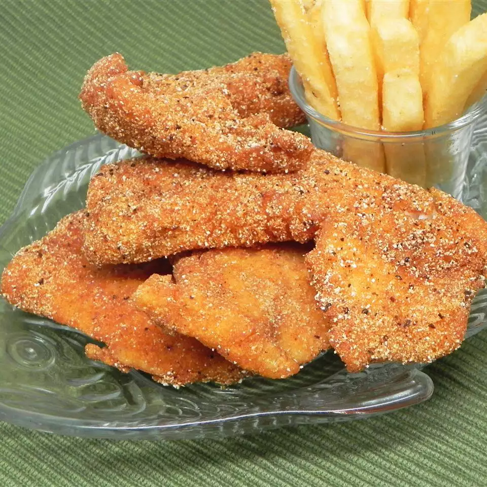

Fried Catfish

Description
This fried catfish recipe is a classic Southern dish traditionally served with buttermilk hush puppies and buttermilk coleslaw.
Ingredients
- Buttermilk
- Water
- Salt and Pepper
- Catfish
- Cornmeal
- All-Purpose Flour
- Old Bay Seasoning
- Vegetable Oil
Steps
- Mix buttermilk, water, salt, and pepper in a small bowl. Pour mixture into a flat pan large enough to hold fillets. Arrange fillets in a single layer in the pan, turning to coat each side. Set aside to marinate.
- Combine cornmeal, flour, and seafood seasoning in a 2-gallon resealable plastic bag. Add fillets to the bag, a few at a time, and tumble gently until evenly coated.
- Heat oil in a deep fryer to 365 degrees F (185 degrees C).
- Fry fillets in hot oil until crisp and golden brown, about 3 minutes. Work in batches to avoid overcrowding, so fillets have room to brown properly. Drain on paper towels.